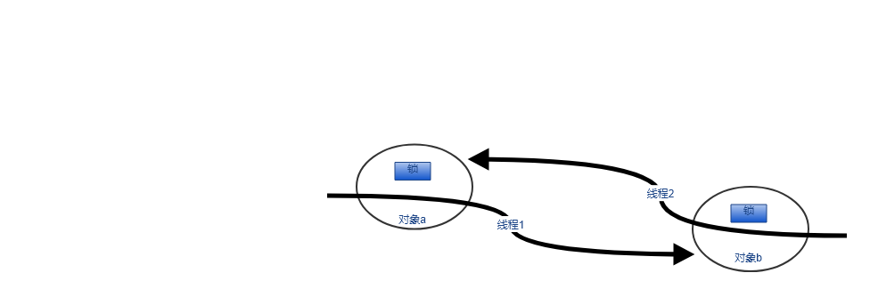
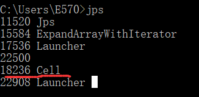
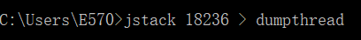
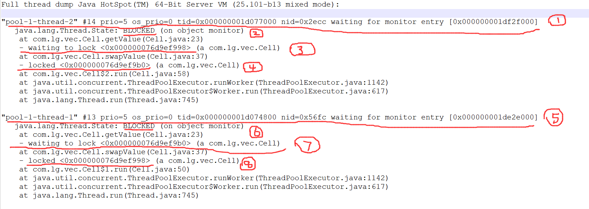
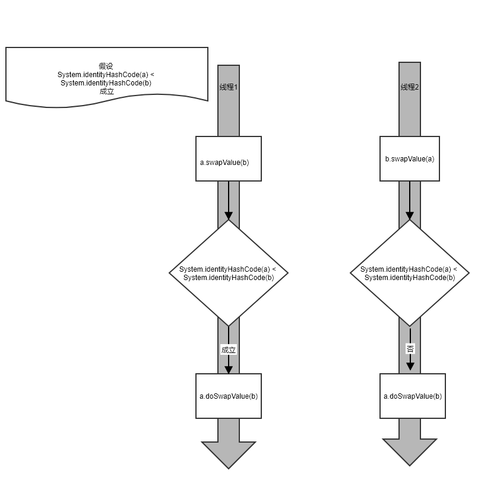

定义
普遍的来说，死锁发生在两个及以上线程中，其中一个线程获取x的同步锁并且正在等待获取y的同步锁;而另外一个线程获取了y的同步锁正在等待获取x的同步锁.
模拟
假设，我们有下面的一个Cell类,swapValue方法用来与另外一个Cell对象交换值:
1 | public class Cell { |
我们在代码中间加了TimeUnit.SECONDS.sleep(1);来模拟间隔时间，以便更容易测试产生死锁的情况.
我们可以看到swapValue方法是一个嵌套的同步(synchronized)方法调用，也就是在这个方法中，会尝试获取多个对象锁.
设想一下，有两个Cell实例a,b,在某一时刻，当线程t1执行a.swapValue(b),同时另一个线程t2执行b.swapValue(a)时，就有可能产生死锁的情况.我们用下面的表来描述这种情况:
| 线程1（a.swapValue(b)） | 线程2（b.swapValue(a)） |
|---|---|
| 进入a.swapValue(b)时获取到了a的锁 | |
| 在执行v=getValue()时，顺利的获得了a的锁（因为在进入swapValue方法时已经获得） | 进入b.swapValue(a)时获取了b的锁 |
| 执行t=other.getValue()时，由于需要b的锁而处于等 | 在执行v=getValue()时，顺利的获得了b的锁(同理在进入方法时已经获得) |
| 在执行t=other.getValue()时，由于需要a的锁而处于等待 |
这种情况下，两个线程就永远锁住了:

我们可以简单用下面的代码验证下:
1 | public static void main(String[] args) throws InterruptedException { |
这里我们定义了包含两个线程的线程池，和两个Cell实例a,b，接着向线程池中提交了两个任务分别执行a.swapValue(b)和b.swapValue(a)，因为我们上面加了时间休眠，所以运行这段代码很轻松就可以看到程序锁住了。
分析
我们可以看到程序好像卡住了，从上面我们可以推测出可能出现线程死锁了,我们接着借助jdk提供的工具来分析分析原因.
jps显示java进程
我们首先通过jps找到我们当前的进程ID:

这里我们得到当前Cell进程ID为18236
jstack 命令dump线程信息
我们使用jstack命令dump出线程信息到当前目录下dumpthread文件中.

分析线程dump文件
现在我们可以打开刚刚的dumpthread文件,找到关键信息:

分析该文件我们可以得到如下信息:
- ①处说明线程
pool-1-thread-2正在等待监视器锁(synchronized是基于对象监视器实现的),waiting for monitor entry [0x000000001df2f000] - ②处说明了线程
pool-1-thread-2处于阻塞(BLOCKED (on object monitor))状态 - ③处说明了该线程阻塞的原因，就是在等待锁,
waiting to lock <0x000000076d9ef998> - ④处说明了该线程已经拥有的锁，
locked <0x000000076d9ef9b0>
同理我们可以分析线程pool-1-thread-1的上诉信息.
接着我们对比下二者主要信息:
我们可以情形看到线程1和线程2分别持有对方等待的锁，这样两个线程互不相让就造成了线程的死锁顺序化资源防止死锁
为了解决上面例子中的多个对象嵌套同步方法/块调用，一个简单的方法就是将资源顺序化。
顺序化资源的思想就是把每一个
synchronized方法或块中的使用的对象与数字标签（用于比较排序）关联起来。如果同步操作根据对象的数字标签的最小最先(least-first)原则,那么他们就可以避免死锁，因为他们都会以同样的顺序获取到锁。普遍来说，在并发的设计中，为了打破对称或者强行设置优先次序，都可以使用顺序化资源的方式.
为了实现获取锁的顺序化，我们可以使用System.identityHashCode方法来将对象顺序化，在实际的运行系统中，该方法在很大程度上能保证唯一性;但是为了进一步保障安全，你应该覆盖hashCode方法或者使用其它方法生成唯一的数字标签.
jdk中对System.identityHashCode方法描述为:
Returns the same hash code for the given object as
would be returned by the default method hashCode(),
whether or not the given object’s class overrides
hashCode().
The hash code for the null reference is zero.
简单的说System.identityHashCode方法会调用给定对象的默认的hashCode方法，不管该对象是否已经覆写(Override)了hashCode方法.(不管对象x是否覆写hashCode方法，都始终会调用原始的默认的hashCode方法).
相关原理说到这里，我们来看看怎么利用顺序化资源和数字标签来避免死锁:
1 | public class Cell2 { |
我们重点注意代码第18-24行就是顺序化资源的实际使用,我们首先判断了两个对象是否是同一个对象，如果是那么就不用做后续操作，直接返回;接着我们通过System.identityHashCode方法来确定两个对象的顺序，从而确定在doSwapValue中按顺序的获取锁.
假设有两个Cell2的实例a,b，线程1执行a.swapValue(b),线程2同时执行b.swapValue(a),那么代码18-24行的执行逻辑如下:

我们这里假设了System.identityHashCode(a)小于System.identityHashCode(b),因此线程1,2经过swapValue中逻辑判断后都会变成执行a.doSwapValue(b),这样一来，不论是a.swapValue(b)还是b.swapValue(a),最终都是执行a.doSwapValue(b),因此获取锁的顺序始终都是先获取a的锁再获取b的锁，因此不会出现死锁.
我们看一看获取锁的过程变化：
这里我们还可以进一步优化doSwapValue中的代码，因为我们在进入doSwapValue方法时已经获取到了必要的锁，那么就可以直接访问成员变量，而不再需要通过同步方法(getValue或者setValue)来获取/设置值了：
1 | private synchronized void doSwapValue(Cell2 other){ |
上面代码中，我们进入a.doSwapValue(b)时首先获取到了a的锁(通过方法上的synchronized关键字)，那么在这个同步方法体里面就没必要通过a.getValue()这个同步方法再次获取a锁了，可以直接访问a.value;进入方法后，我们再通过synchronized (b){}同步块来获取b的锁，这样在同步代码块里面也可以直接访问b.value的值了，相比之前的代码有少许的性能优化.
总结
这里主要总结了我们实际开发环境中经常遇到的嵌套调用同步方法中容易出现死锁的情形，并通过顺序化资源的思想来防止死锁.死锁的定义和例子等都是我阅读Doug Lea的书Concurrent Programming in Java: Design Principles and Patterns中列举的.后续还会进一步总结书中的经典之处.
参考资料
- Concurrent Programming in Java: Design Principles and Patterns by Doug Lea,第2.2.5，2.2.6章